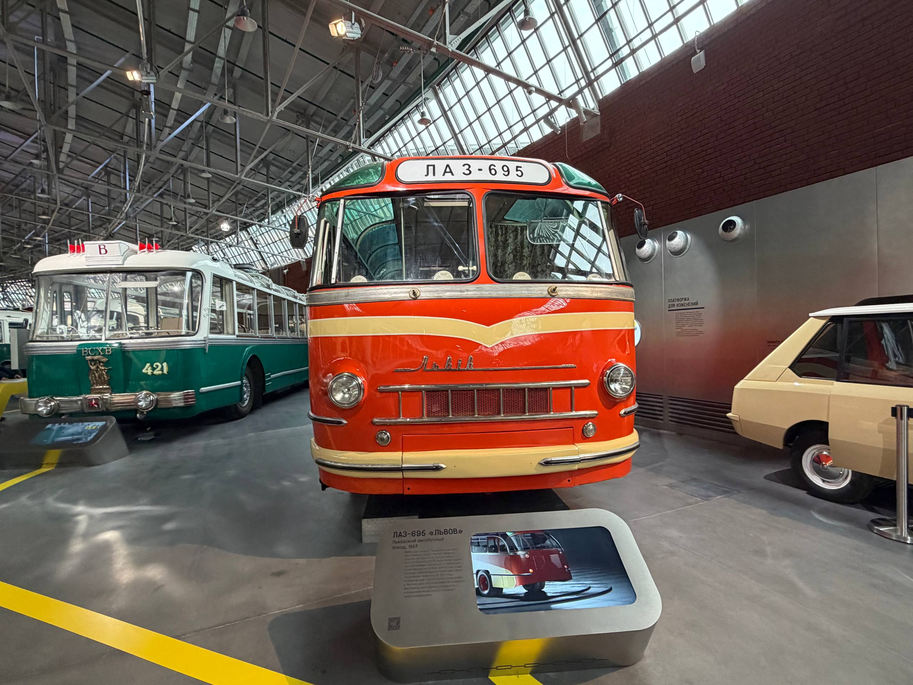
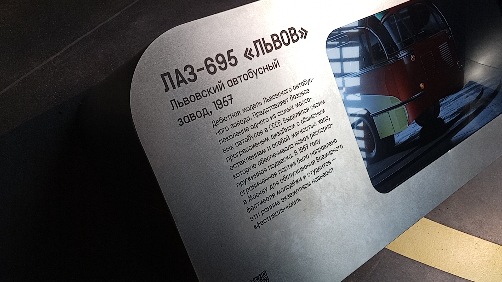
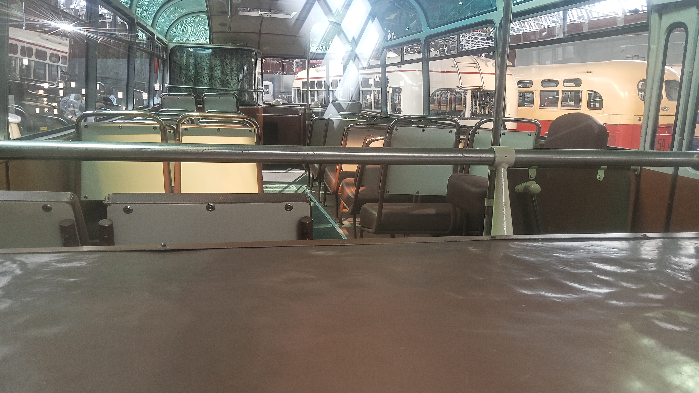

ЛАЗ-695 № 006
Перед вами дебютная модель Львовского автобусного завода. Данный экземпляр (бортовой № 006) выпущен в 1957 году и относится к ограниченной партии, которая была направлена в Москву для обслуживания Всемирного фестиваля молодёжи и студентов 1957 года.
Эти ранние экземпляры называют «фестивальными». Экспонат выделялся своим прогрессивным дизайном с обширным остеклением и особой мягкостью хода, которую обеспечивала новая рессорно-пружинная подвеска.
Общая информация
| Параметр | Значение |
|---|---|
| Город | Москва 🇷🇺 |
| Транспортная компания | Музей Транспорта Москвы |
| Модель | ЛАЗ-695 «Львов» |
| Бортовой № | 006 |
| Год выпуска | 1957 |
| Текущее состояние | Памятник / Музейный |
| Примечание | «Фестивальный» экземпляр (обслуживание Всемирного фестиваля молодёжи и студентов 1957 года) |
Технические характеристики
Основные параметры
Длина: 9,19 м
Ширина: 2,5 м
Высота: 2,87 м
Снаряжённая масса: 6750 кг
Вместимость: 65 пассажиров (32 сидячих)
Максимальная скорость: 75 км/ч (ранняя версия)
Силовая установка
Двигатель: ЗИЛ-158Л, 5,56 л, 109 л.с. (на ранних версиях)
КПП: 5-ступенчатая механическая
Расположение: заднее, продольное
Подвеска: Рессорно-пружинная
История экспоната
Выпуск и дебют
Автобус с бортовым номером 006 выпущен на Львовском автобусном заводе. В составе ограниченной партии направлен в Москву для обслуживания гостей Всемирного фестиваля молодёжи и студентов.
Выставка «ЭкспоСитиТранс-2014»
Автобус представлен на выставке на ВДНХ.
Музей «Московский транспорт»
Экспонат находился в музее на улице Рогожский Вал.
Музей Транспорта Москвы
Автобус занял достойное место в постоянной экспозиции на Новорязанской улице.
Особенности конструкции
Прогрессивный дизайн
Дебютная модель имела обширное остекление и обтекаемую форму, что выделяло её на фоне предшественников.
Рессорно-пружинная подвеска
Особая мягкость хода обеспечивалась новой рессорно-пружинной подвеской.
Заднемоторная компоновка
Двигатель располагался продольно в заднем свесе. Это освободило место для пассажирского салона и снизило шум.
Несущий кузов
Пространственная конструкция с несущим основанием, интегрированным с каркасом кузова.
Фотогалерея

📌 Музей Транспорта Москвы.
Общий вид экспоната.


📌 Музей Транспорта Москвы.
Музейная информация.

📌 Музей Транспорта Москвы.
Салон, вид вперед.
Нажмите на фото для увеличения
«Ограниченная партия была направлена в Москву для обслуживания Всемирного фестиваля молодёжи и студентов — эти ранние экземпляры называют "фестивальными"».